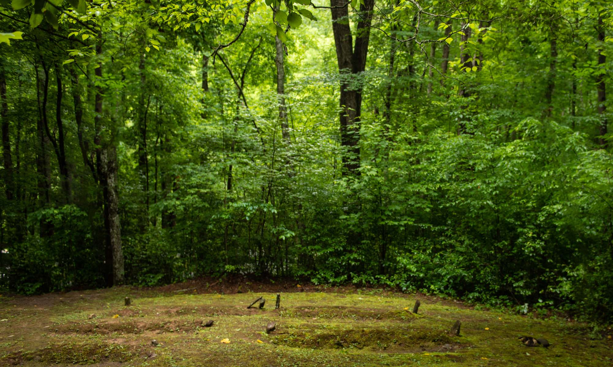

"What we do know is each grave represents someone who lived and who died before the Civil War. Someone who had an occupation, someone who drank from the spring, someone who looked up at the stars."
A light mist was clinging to the treetops and sounds of songbirds mixed with morning traffic at Mingus Mill in Great Smoky Mountains National Park, not far from Cherokee. Blair Tormey, a geologist with the Program for the Study of Developed Shorelines at Western Carolina University, adjusted his ballcap and quickly assembled a ground penetrating radar unit, looking much like a robotic lawn mower, before pushing it up the hillside. The destination, an almost forgotten cemetery, is a long way from any coastal beachfront or tidal basin where he might otherwise be working on a day like today. A rectangular clearing of some 1,500 square feet creates a small graveyard known variously as the Enloe Cemetery or the Mingus Mill burial ground. Five mounded graves, some with mossy stones as markers, are close to the still-operational gristmill, but a long way from history books, with the occupants unknown other than their status as enslaved people. “What we do know is each grave represents someone who lived and who died before the Civil War. Someone who had an occupation, someone who drank from the spring, someone who looked up at the stars,” said Antoine Fletcher, a National Park Service science communicator, as he walked up to the site to join Tormey. Fletcher is the director of the Smokies’ African American Experience, a project created by Great Smoky Mountains National Park in 2018 with funding from nonprofit partners Great Smoky Mountains Association and Friends of the Smokies. WCU’s Mountain Heritage Center joined the effort in 2019 and in 2020 the Study of Developed Shorelines became a part of the project. The goal is simple and direct: to learn, then share the stories of African Americans in the Southern Appalachians. A “pop-up” exhibit is planned for outreach. Regional universities, including WCU, will hold panel discussions and local communities will sponsor townhalls in the near future. Little was written – or seemingly known – about the African Americans who called these hills home before the establishment of the national park. It is a complicated history to unravel, historians point out, with misrepresentations and misunderstandings throughout the timeline and precious little documentation. Horace Kephart, the early 20th century writer and park advocate, wrote in his 1913 book “Our Southern Highlanders” that “… it was understood that the Appalachian highlands were occupied by a peculiar people called ‘mountain whites.’ This odd name was given them not to distinguish them from mountain negroes, for there were, practically, no mountain negroes … throughout most of Appalachia the population is almost exclusively white.” In the coming year, WCU’s Global Black Studies minor program will become involved with the Smokies’ African American Experience Project, with program director David Walton also planning to include the university’s history department, the Romare Bearden branch of the Association for the Study of African American Life and History, and the Asheville Alumni Chapter of Kappa Alpha Psi. “There is incomplete documentation on this site – there’s not even a set number of burials recorded,” said Tormey, pushing first uphill and then down in a clear, delineated path. “Which makes this GPR work so important. The signal can penetrate down 8 to 10 feet and allows you to see disruptions in the earth from coffins to simple burials, to the outline of a burial shaft.” Momentarily, two Labrador retrievers trained in detecting human decomposition (often called “cadaver dogs”) were deployed on the site by Paul Martin ’11 of Rossville, Tennessee. “The dogs will allow me to ‘look beneath’ the surface,” said Martin, who operates his own forensic company, Martin Archaeology Consulting. “We will give the dogs the space and the time to detect odors they have been trained to respond to. Decomposition is a chemical change and an ongoing one. If there’s something here, they will find it.” Tormey’s GPR already had confirmed three other unmarked graves closer to the five known ones. Working independently and in separate sessions, both Labs indicate yet another potential burial several yards downslope from the others. Tails wagging, the dogs were returned to kennel carriers. Researchers smiled, made notes and prepared for the next site. There are six known African American cemeteries or burial sites in the Smokies, with others highly probable. The research isn’t all underground. Contemporary oral histories are being recorded, while the Special and Digital Collections at WCU’s Hunter Library recently digitized a collection of interviews conducted between 1986 and 1989 with African Americans from Western North Carolina, all of whom were older than 69 at the time. The project will utilize family histories, census data and photo albums. It’s an incredible story waiting to be told, Fletcher said. “I want this story to overlap with the Native American story and the early white settlers’ story, because these people were a lot alike. The mountain culture is rich and that history was shared by many.” The Smokies African American Experience is an ongoing project, inviting anyone and everyone interested or with information to participate. Contact Fletcher at antoine_fletcher@nps.gov or 828-926-6251.